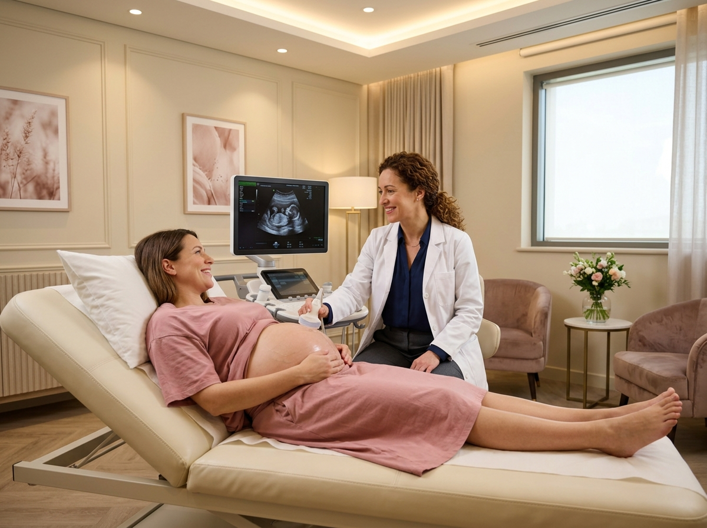

فهرس المقالات
هل لديكِ استفسار طبي خاص؟
التواصل وحجز المواعيد متاح حصرياً عبر تطبيق واتساب لضمان ترتيب أوقات الزيارة بدقة.
محادثة وحجز عبر واتساب: 0569049926دليلكِ الشامل لاختيار وسيلة منع الحمل الأنسب لجسمكِ
يعد تنظيم الأسرة واختيار وسيلة منع الحمل المناسبة خطوة أساسية للحفاظ على صحة المرأة الجسدية والنفسية، وتجنب الحمل غير المخطط له، خاصة في فترات الرضاعة أو بعد التعافي من حمل سابق.
أبرز وسائل منع الحمل الحديثة المتوفرة:
تتنوع الخيارات الطبية المتاحة لتناسب مختلف الحالات والاحتياجات الفردية لكل سيدة:
- اللولب الهرموني (Mirena): يتميز بفاعلية تتجاوز 99%، ويسهم في تقليل غزارة وآلام الدورة الشهرية، مع استمرار مفعوله لعدة سنوات وإمكانية الحمل فور إزالته.
- اللولب النحاسي: خيار غير هرموني آمن تماماً، يناسب السيدات اللاتي لا يرغبن في تأثيرات هرمونية، ويوفر حماية طويلة ومستقرة.
- كبسولات منع الحمل تحت الجلد (Nexplanon): كبسولة صغيرة توضع تحت جلد الذراع بإجراء بسيط وسريع، وتمنحكِ حماية ممتدة لـ 3 سنوات دون القلق بشأن تذكر الحبوب اليومية.
نصيحة دكتورة سوزان محمد عيسى:
"لا توجد وسيلة واحدة تناسب الجميع. استشارة الطبيبة المتخصصة والفحص بالسونار قبل التركيب هما الضمان الأساسي لاختيار الوسيلة الأكثر أماناً وملاءمة لجسمكِ."
تأخر الحمل: متى تراجعين الدكتورة وكيف تتم متابعة التبويض؟
تأخر الحمل حالة شائعة، والتقييم المبكر يساعد على معرفة السبب وبدء العلاج المناسب في الوقت الصحيح، بعيداً عن القلق والتخمين.
متى تراجعين الدكتورة؟
يُعرَّف تأخر الحمل بعدم حدوثه بعد عام كامل من المحاولة المنتظمة. ويُنصح بالمراجعة بعد 6 أشهر فقط إذا كان عمركِ 35 عاماً فأكثر، أو إذا كانت الدورة الشهرية غير منتظمة، أو وُجد تاريخ مرضي نسائي سابق.
ماذا يشمل التقييم والمتابعة؟
- السونار الداخلي: لفحص الرحم والمبيضين والكشف عن الأكياس أو الألياف أو أي عوامل قد تؤثر على الحمل.
- متابعة التبويض: تتبع نمو الحويصلة بالسونار خلال الدورة لتحديد موعد التبويض وأنسب أيام للحمل.
- التحاليل الهرمونية: تُطلب عند الحاجة لتقييم وظائف المبيض والغدة الدرقية وغيرها من الهرمونات المؤثرة على الخصوبة.
رأي دكتورة سوزان محمد عيسى:
"الفحص المبكر يوفر عليكِ الوقت والقلق ويمنحكِ إجابات واضحة. ويُفضَّل أن يكون تقييم الزوج جزءاً من الخطة منذ البداية."
أهمية الفحص بالسونار البطني والداخلي لمتابعة سلامة الحمل

يعد السونار البطني والداخلي الركيزة التشخيصية الأكثر أهمية للاطمئنان على مراحل نمو الجنين، وموقع المشيمة، والتأكد من صحة وسلامة الرحم والمبايض.
الفروق والفوائد الطبية:
- السونار الداخلي (المهبلي): يوفر دقة فائقة في الأسابيع الأولى، ويكشف عن كيس الحمل ونبض الجنين مبكراً، كما يحدد سلامة المبيضين بدقة متناهية.
- السونار البطني: الفحص الأساسي خلال الثلثين الثاني والثالث لمراقبة نمو الجنين، وقياس محيط الرأس، وفحص كمية السائل المحيط به.